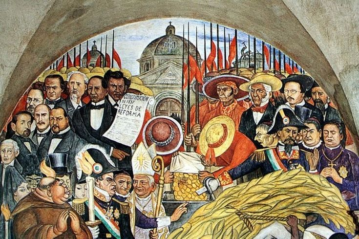

Claves de la libertad: Revoluciones y aportaciones
| Proceso Historico | Contexto |
|---|---|
| Revolución Inglesa (1688) | Afirmación del parlamento y limites al poder real |
| Independencia de EE.UU (1776) | La libertad y derechos naturales como base del gobierno |
| Revolución Francesa | Soberania popular e igual ente la ley |
Influyo en la creación de las primeras constituciones mexicanas y sento bases para un Estado moderno, con leyes que protegian los derechos de las personas y promovieran la participación ciudadana
Soberania popular
Gobierno Republicano y Federalista
En 1823 se convocó a un Congreso Constituyente con la finalidad de elaborar la primera constitución.
Durante los debates surgieron dos posturas
Una vez concluida la lectura, realiza la actividad de evaluación haciendo clic en el siguiente botón.